01. Framing
The information clients act on is in the middle, but the scale is set by the edges
A benchmarking report answers a client's question: where do we stand in the market, and what are the openings for a different direction.
The chart made it difficult to see where the valuable metrics were. The client needed to see their value against their competition without losing the context of the full picture.
This is a case study about getting the middle of a distribution back without giving up the full range.
02. Background
What RiskMatch was
RiskMatch was Vertafore's insurance data analytics platform. Its Benefits Benchmarking Report let an employee benefits broker assemble a peer cohort from a universe of roughly 94,000 plans. Client employers compared against that cohort across deductibles, copays, contribution splits, and rate structures.
Brokers built these reports for renewal conversations. The broker configures the cohort; the employer sits across the table and reads the output.
I led design on the report across the criteria builder, the report sections, and the comparison charts inside them. This case study is about one chart, which appeared in every section of every report the product produced.
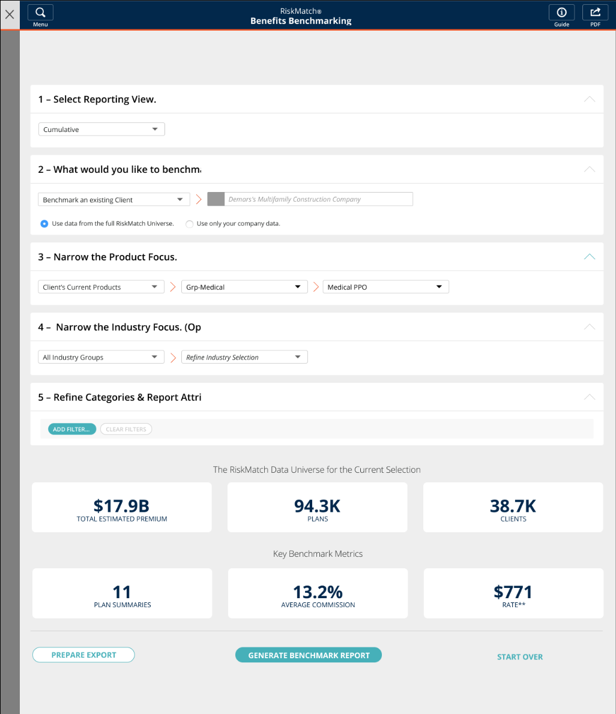
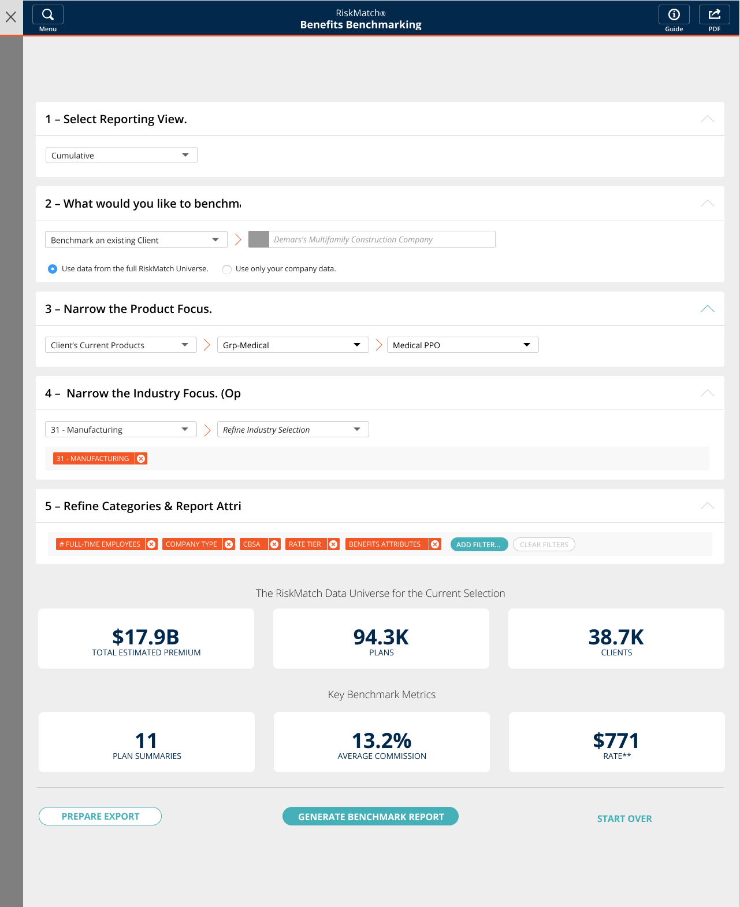
The criteria builder. The broker narrows the universe before any chart exists.
03. Starting point
What the legacy chart showed
The platform already had a range chart. It plotted a distribution as a grey bar with a shaded middle band and a single median marker, and it was used across benchmark comparisons throughout the product.
It gave a serviceable view of the market, but gaps kept clients from getting the most out of it. There was no way to see how their own plan compared inside the chart. The markers were also generic, which left room to add distinction and make the important values quicker to read.
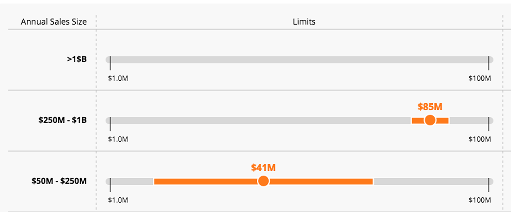
04. Problem
The range shifts, and the useful part collapses
An axis has to reach the largest value in the data. In benefits benchmarking, the largest value can be absurd. One employer somewhere in a universe of 94,000 plans carries a $22,500 individual deductible when the average is closer to $1,000. Scaled to reach it, the chart spends almost its entire width on the distance between those two numbers, and the band where realistic plans actually sit collapses into the first inch.
The obvious fix is to cut the tail off. But the tail is real data, and brokers used it. Knowing the market runs to $22,500 is part of what makes “your client is at $329” mean something, and it's the figure they get asked about in the room.
So the problem was never how to remove the outlier.
How do you make the middle of the range readable while keeping the context of the full range intact?
05. Challenge
The two rows pull in opposite directions
The compression showed up in two shapes, and the fix for one is the opposite of the fix for the other.
Copays run $0 to $1,250 across the universe, while the middle 50% of plans sit between $10 and $430. Scaled to reach the maximum, that band takes up the left third of the bar and everything inside it lands within a few pixels. This row needs the scale to tighten.
The cohort runs $92 to $1,000, and a client sitting at $1,430 falls outside the market entirely. There is no position on the bar for that value, and it's the most decision-relevant number on the row — this client pays more than any comparable plan in the cohort. This row needs the scale to stretch.
Pain points the chart needed to address
Make the client's position clear in relation to the other indicators. A broker scans eight rows before reading any of them. Above or below the median, inside or outside the middle 50% — this needed to register at a glance.
Keep the full context intact across ranges. A wide axis shows the true extent of the market but minimizes the part anyone acts on. A narrow axis separates the markers but cuts away context the broker may be asked about in the meeting.
06. Explorations: markers
Telling the client apart from the market
Putting the client on the bar created a second problem: two markers in a space designed for one. I worked through three treatments.
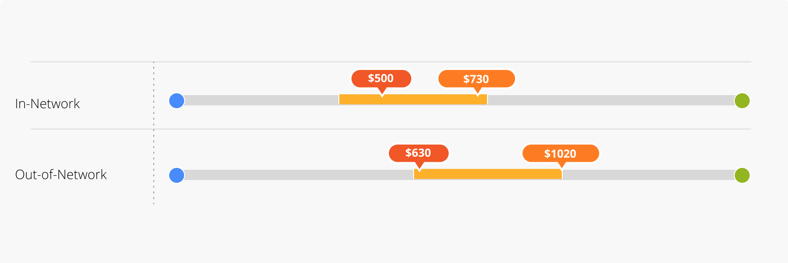
Two orange pills, same side. This broke down as soon as the two values were near each other and the pills overlapped.
Orange pill, opposite side. Give each marker its own lane, one above the bar and one below. The collision resolves, but two pills of equal weight still compete for attention.
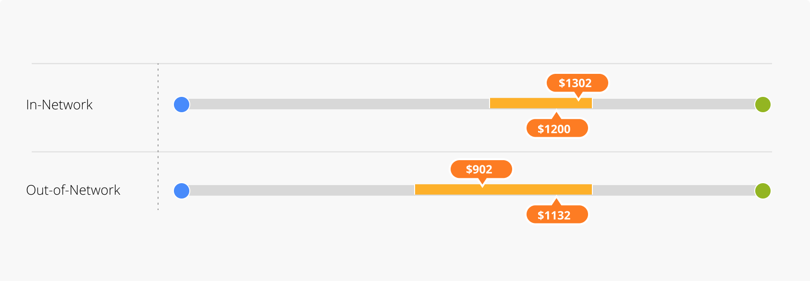
A black dot for the client. Less intrusive, still distinct. On a chart this dense the client needed to be findable, not dominant.
The key came out of the same pass: each element named once — lowest, 25th percentile, middle 50%, 75th percentile, highest, median, and the client's policy.
That closed the collision problem. It did nothing for the compression. Two markers you can tell apart are still two markers inside an inch of bar.
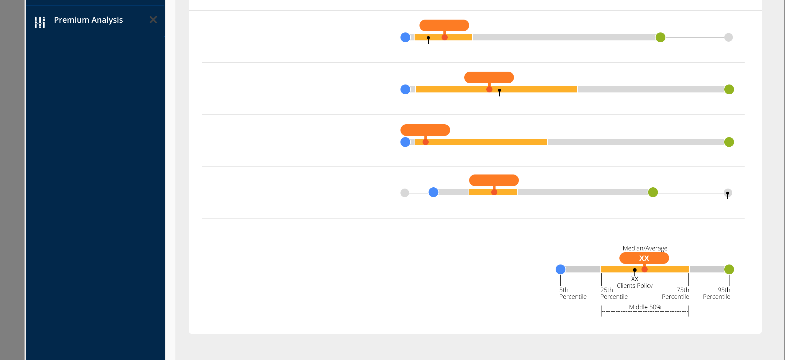
07. Explorations: chart range
Cutting the outlier out
The larger problem was outliers stretching the bar. That shrank the area where most of the data lived and gave width to the regions carrying the least information. I tried visual treatments that would remove the emptiest stretch of the axis.
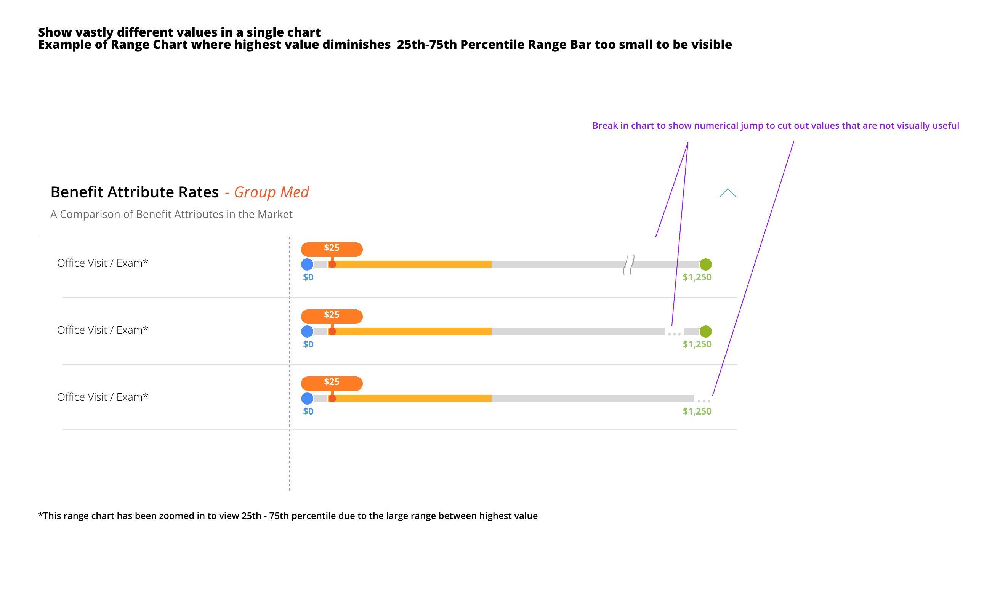
This did put focus back on the dense part of the distribution, but it left a visible void in the data. That created a blind spot: a broker asked about the removed region had no way to answer. The information wasn't the most important on the row, but it was still real and still had to be accounted for.
08. Solution
Solving it in two layers
The mistake was trying to make one chart do both jobs. The answer was to spread the problem across two layers, so each solved only the part it was good at.
The marker system does the first job. Position reads before value, and the client is findable without shouting.
The toggle does the second: it lets the reader choose the question. A segmented control switches between two views of the same row.
Full Range shows the market's true extent, so a broker can see the whole spread of what the criteria produced.
Middle 50% rescales each row so the axis is the 25th-to-75th band. Annual Deductible – Individual goes from a $0–$22,500 axis to $250–$1,000, and the client at $329 separates cleanly from the median at $500.
Nothing is hidden by default and nothing is hidden permanently. This is the distinction the bar break couldn't make: zoom in without excluding the rest of the data.
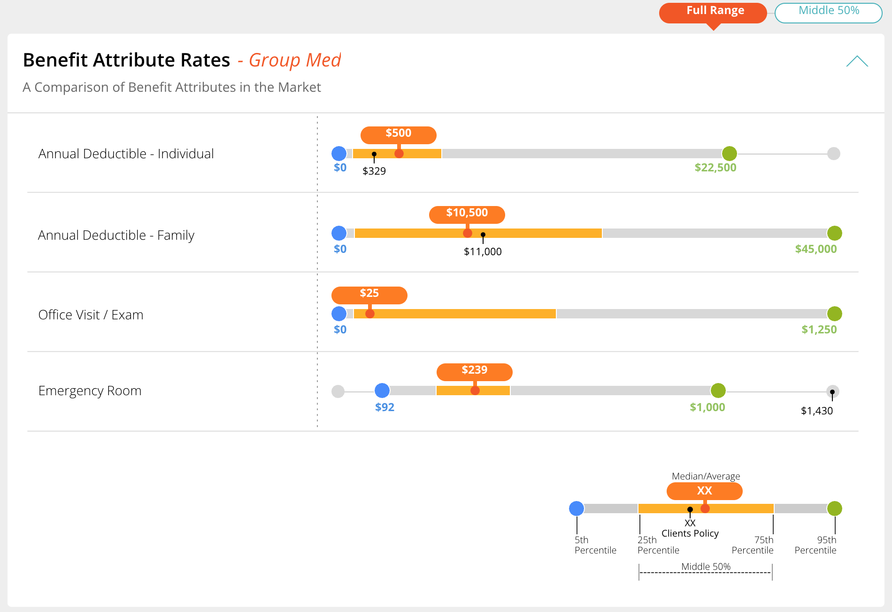
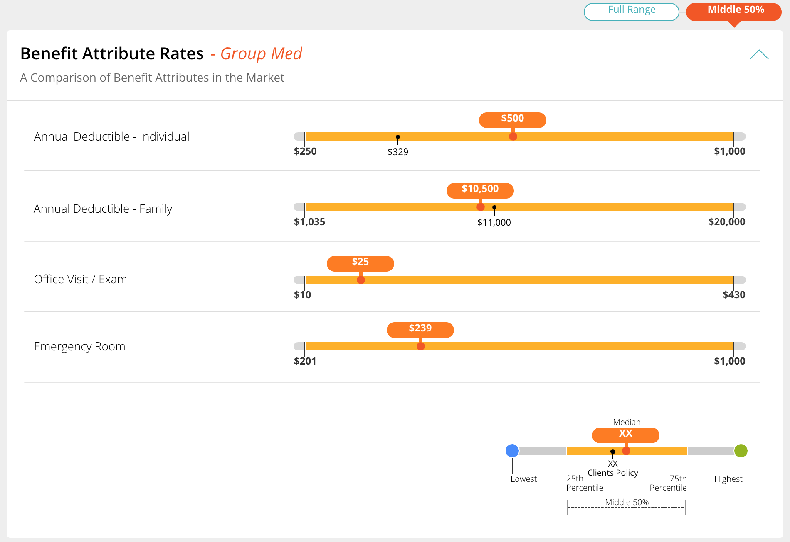
The same rows, two questions. One click apart.
09. Rationale
Decisions that made it hold
The quiet client marker worked because the chart was already full — endpoints, band, median pill, axis labels. A second loud element would have turned every row into a competition. A small dark dot marks where the client's value sits without fighting the median pill for the same inch.
The toggle worked because it took nothing away. Every earlier attempt at compression removed something: the bar break removed a region, a fixed zoom would have removed the tail. The toggle removes nothing. It changes which question the axis is answering, and the other view is one click back.
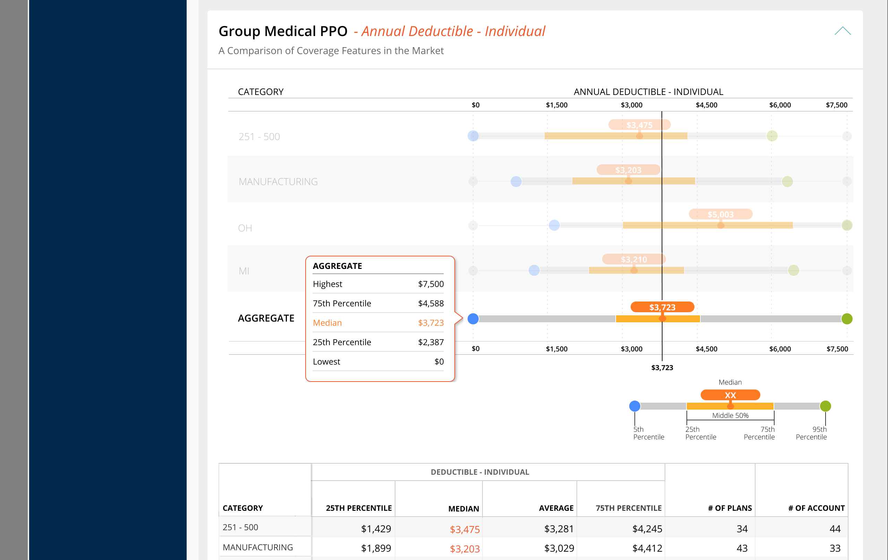
The marker system carried across every section of the client report and the multi-category report. Contribution Costs, Rate Costs, Employee Segment Costs, and Premium Over Time all present the same information in the same encoding, so a broker learns one chart and reads all of them.
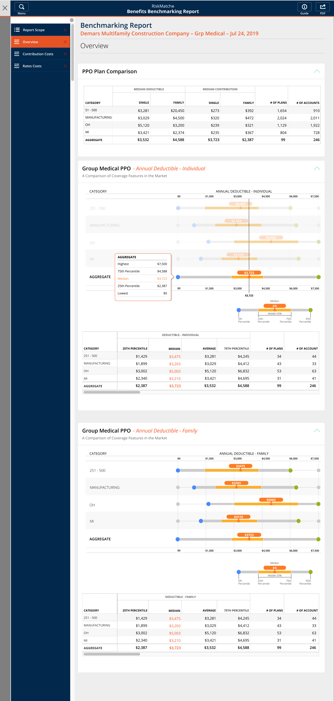
10. Thoughts
When one view has to answer two incompatible questions, adding encoding makes it worse
Every fix I tried inside the chart — different markers, staggered labels, a break in the bar — was an attempt to fit two scales into one. Each one made the chart busier and the insight harder to pull out.
What worked was giving up on solving it in one place. The marks made position readable. The control let the reader choose which question they were asking. And setting the endpoints at the 5th and 95th percentile meant the conflict came up far less often to begin with.